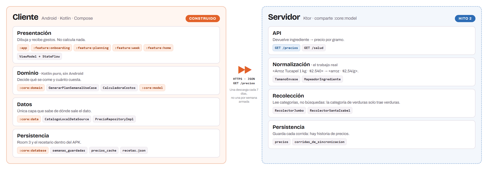

<meta charset="utf-8">
<title>Cookify · Láminas Hito 1</title>
<link rel="stylesheet" href="https://fonts.googleapis.com/css2?family=Bricolage+Grotesque:opsz,wght@12..96,600;12..96,700;12..96,800&family=Archivo:wght@400;500;600;700&display=swap">
<style>
/*
 * Ocho laminas para cinco minutos. Se imprimen con:
 *   msedge --headless=new --print-to-pdf=laminas-hito1.pdf --no-pdf-header-footer
 *
 * Regla de contenido: poco texto y numeros grandes. Lo que se lee en la lamina no
 * se dice, y lo que se dice no se lee. El guion esta en docs/guion-presentacion.md.
 */
@page { size: 13.333in 7.5in; margin: 0; }
* { box-sizing: border-box; margin: 0; padding: 0;
    -webkit-print-color-adjust: exact; print-color-adjust: exact; }

:root {
  --fondo:  #0B0B0E;
  --carta:  #17161C;
  --borde:  #2A2731;
  --texto:  #F5F1F0;
  --medio:  #B5AEB8;
  --tenue:  #78717E;
  --ambar:  #FF7A3D;
  --lima:   #B9F227;
  --display: "Bricolage Grotesque", "Segoe UI", system-ui, sans-serif;
  --cuerpo:  "Archivo", "Segoe UI", system-ui, sans-serif;
}

html { background: #3a3740; }
body { font-family: var(--cuerpo); color: var(--texto); }

.lamina {
  width: 13.333in; height: 7.5in; background: var(--fondo);
  padding: 0.62in 0.78in; position: relative; overflow: hidden;
  page-break-after: always; break-after: page;
  display: flex; flex-direction: column;
}
.lamina:last-child { page-break-after: auto; break-after: auto; }
@media screen { .lamina { margin: 0 auto 16px; box-shadow: 0 10px 34px rgba(0,0,0,.5); } }

/* marca de agua de pie */
.pie {
  position: absolute; left: 0.78in; right: 0.78in; bottom: 0.4in;
  display: flex; justify-content: space-between; align-items: center;
  font-size: 11.5px; color: #4E4955; letter-spacing: .3px;
}
.pie .m { font-family: var(--display); font-weight: 700; }
.pie .m i { color: var(--ambar); font-style: normal; }

.eyebrow {
  font-family: var(--display); font-size: 13px; font-weight: 700;
  letter-spacing: 3px; text-transform: uppercase; color: var(--ambar);
  margin-bottom: 16px;
}
h1 { font-family: var(--display); font-size: 62px; font-weight: 700;
     letter-spacing: -2px; line-height: 1.04; text-wrap: balance; }
h2 { font-family: var(--display); font-size: 40px; font-weight: 700;
     letter-spacing: -1.2px; line-height: 1.1; margin-bottom: 14px; }
.sub { font-size: 21px; color: var(--medio); line-height: 1.45; font-weight: 300; max-width: 22ch; }
.sub.ancho { max-width: 34ch; }

.halo {
  position: absolute; border-radius: 50%; pointer-events: none;
  background: radial-gradient(closest-side, rgba(255,122,61,.30), rgba(255,122,61,.06) 56%, transparent 72%);
}

/* ---- piezas ---- */
.tres { display: flex; gap: 26px; margin-top: auto; margin-bottom: auto; }
.dato {
  flex: 1; background: var(--carta); border: 1px solid var(--borde);
  border-radius: 16px; padding: 30px 28px;
}
.dato .n { font-family: var(--display); font-size: 62px; font-weight: 800;
           color: var(--ambar); letter-spacing: -2.5px; line-height: 1; }
.dato .t { font-size: 16.5px; color: var(--medio); margin-top: 12px; line-height: 1.4; }
.dato .f { font-size: 12.5px; color: var(--tenue); margin-top: 14px;
           padding-top: 11px; border-top: 1px solid var(--borde); }

.fila { display: flex; gap: 22px; align-items: center; flex: 1; min-height: 0; }
.col { flex: 1; min-width: 0; }

.telefonos { display: flex; gap: 15px; justify-content: center; align-items: flex-end; }
.telefonos img { height: 3.95in; width: auto; border-radius: 13px; border: 1px solid var(--borde); display: block; }

.carta-blanca { background: #fff; border-radius: 12px; padding: 13px; }
.lamina .carta-blanca img { max-height: 4.05in; object-fit: contain; }
.carta-blanca img { width: 100%; display: block; }

ul.puntos { list-style: none; }
ul.puntos li { font-size: 19px; color: var(--medio); line-height: 1.4;
               padding-left: 26px; position: relative; margin-bottom: 15px; }
ul.puntos li::before { content: ""; position: absolute; left: 0; top: .55em;
                       width: 9px; height: 9px; border-radius: 50%; background: var(--ambar); }
ul.puntos li b { color: var(--texto); font-weight: 600; }

.marcador { color: var(--ambar); }
.lima { color: var(--lima); }

table.comp { width: 100%; border-collapse: collapse; font-size: 17px; }
table.comp td { padding: 11px 14px 11px 0; border-bottom: 1px solid var(--borde); color: var(--medio); }
table.comp td:last-child { text-align: right; font-variant-numeric: tabular-nums;
                           font-weight: 600; color: var(--texto); padding-right: 0; }
table.comp tr.alto td:last-child { color: var(--ambar); }
table.comp tr:last-child td { border-bottom: none; }
</style>

<!-- ═══ 1 · APERTURA ═══ -->
<section class="lamina" style="justify-content:center">
  <div class="halo" style="top:-3in;left:-1.6in;width:9in;height:7in"></div>
  <div style="position:relative">
    <div class="eyebrow">Cookify</div>
    <h1 style="max-width:16ch">Todos los domingos<br>alguien hace la misma<br>cuenta mal.</h1>
    <p class="sub ancho" style="margin-top:26px;font-size:23px">
      Decidir qué se come esta semana y calcular si la plata alcanza. Se hace de memoria,
      se hace mal, y la diferencia se paga en el supermercado.</p>
  </div>
  <div class="pie"><span class="m">Cook<i>ify</i></span><span>Ernesto Guillén Guerrero · INGT1003 · Hito 1</span></div>
</section>

<!-- ═══ 2 · EVIDENCIA ═══ -->
<section class="lamina">
  <div class="eyebrow">El problema tiene tamaño</div>
  <h2 style="max-width:20ch">La comida es el primer gasto<br>del hogar chileno.</h2>
  <div class="tres">
    <div class="dato">
      <div class="n">$307.947</div>
      <div class="t">gasta al mes en comida el hogar promedio. Es el <b style="color:var(--texto)">21,2 %</b> de todo lo que gasta.</div>
      <div class="f">INE · IX Encuesta de Presupuestos Familiares</div>
    </div>
    <div class="dato">
      <div class="n">237,8 %</div>
      <div class="t">de diferencia por <b style="color:var(--texto)">la misma canasta</b> según en qué supermercado se compre.</div>
      <div class="f">SERNAC · 7 de septiembre de 2026</div>
    </div>
    <div class="dato">
      <div class="n">95 %</div>
      <div class="t">considera <b style="color:var(--texto)">normal</b> botar la comida que se acumula en el refrigerador.</div>
      <div class="f">Universidad de Talca · vía BCN</div>
    </div>
  </div>
  <div class="pie"><span class="m">Cook<i>ify</i></span><span>2 / 8</span></div>
</section>

<!-- ═══ 3 · LA PROMESA ═══ -->
<section class="lamina" style="justify-content:center">
  <div class="halo" style="top:-2.4in;right:-2in;width:9in;height:7.5in"></div>
  <div style="position:relative">
    <div class="eyebrow">La promesa</div>
    <h1 style="max-width:21ch;font-size:54px">
      Para quien cocina en casa con el presupuesto contado,
      <span class="marcador">Cookify arma una semana de almuerzos que cabe en lo que puede gastar</span>,
      con el precio del supermercado donde compra.</h1>
    <p class="sub ancho" style="margin-top:30px;max-width:44ch">
      Si dice que tiene $50.000, recibe una semana de $50.000 o menos —o le decimos
      exactamente cuánto le falta. No hay un tercer resultado.</p>
  </div>
  <div class="pie"><span class="m">Cook<i>ify</i></span><span>3 / 8</span></div>
</section>

<!-- ═══ 4 · EL PRODUCTO ═══ -->
<section class="lamina">
  <div style="display:flex;align-items:baseline;gap:20px;margin-bottom:6px">
    <div class="eyebrow" style="margin-bottom:0">No es una maqueta</div>
    <div style="font-size:17px;color:var(--tenue)">Capturas de la aplicación corriendo</div>
  </div>
  <h2 style="margin-bottom:20px">Ya funciona de punta a punta.</h2>
  <div class="telefonos" style="margin-top:auto;margin-bottom:auto">
    
    
    
    
    
  </div>
  <div style="display:flex;gap:44px;margin-top:20px;font-size:17px;color:var(--medio)">
    <span><b class="lima">69</b> recetas chilenas</span>
    <span><b class="lima">98</b> ingredientes con precio</span>
    <span><b class="lima">7</b> preguntas de entrada</span>
    <span><b class="lima">0</b> conexión necesaria</span>
  </div>
  <div class="pie"><span class="m">Cook<i>ify</i></span><span>4 / 8</span></div>
</section>

<!-- ═══ 5 · MAPA DEL PRODUCTO ═══ -->
<section class="lamina">
  <div class="eyebrow">Arquitectura de información</div>
  <h2 style="margin-bottom:16px">Un solo camino, sin menús donde perderse.</h2>
  <div class="carta-blanca" style="margin-top:auto;margin-bottom:auto">
    
  </div>
  <p style="font-size:17px;color:var(--medio);margin-top:16px;max-width:88ch">
    Cada caja lleva el nombre que el usuario lee en el teléfono, no el del sistema.
    Desde la portada salen dos caminos y todo lo demás son pasos dentro de ellos.
    <b style="color:var(--texto)">Guardar devuelve a la portada</b>: ese es el único ciclo,
    y es el que convierte un uso suelto en un hábito.</p>
  <div class="pie"><span class="m">Cook<i>ify</i></span><span>5 / 8</span></div>
</section>

<!-- ═══ 6 · ARQUITECTURA ═══ -->
<section class="lamina">
  <div class="eyebrow">Arquitectura técnica</div>
  <h2 style="margin-bottom:14px">Cliente y servidor, en capas.</h2>

  <div class="carta-blanca" style="padding:10px;margin:0 auto">
    
  </div>

  <div style="display:flex;gap:24px;margin-top:auto">
    <div style="flex:1;border-top:2px solid var(--ambar);padding-top:13px">
      <div style="font-size:17px;color:var(--texto);font-weight:600;margin-bottom:5px">El dominio no conoce Android</div>
      <div style="font-size:15.5px;color:var(--medio);line-height:1.4">El motor se prueba en la JVM, sin emulador y en milisegundos.</div>
    </div>
    <div style="flex:1;border-top:2px solid var(--ambar);padding-top:13px">
      <div style="font-size:17px;color:var(--texto);font-weight:600;margin-bottom:5px">Los repositorios son interfaz</div>
      <div style="font-size:15.5px;color:var(--medio);line-height:1.4">Por eso el Hito 2 cambia de dónde viene el precio sin tocar el motor.</div>
    </div>
    <div style="flex:1;border-top:2px solid var(--ambar);padding-top:13px">
      <div style="font-size:17px;color:var(--texto);font-weight:600;margin-bottom:5px">Nueve pasos documentados</div>
      <div style="font-size:15.5px;color:var(--medio);line-height:1.4">Armar una semana recorre las cuatro capas, una por una.</div>
    </div>
  </div>

  <div class="pie"><span class="m">Cook<i>ify</i></span><span>6 / 8</span></div>
</section>

<!-- ═══ 7 · LA DECISIÓN ═══ -->
<section class="lamina">
  <div class="eyebrow">La decisión que sostiene todo</div>
  <h2 style="margin-bottom:18px">El precio no se estima. Se mide.</h2>
  <div class="fila" style="gap:44px">
    <div class="col">
      <p style="font-size:18px;color:var(--medio);line-height:1.45;margin-bottom:16px">
        Medimos los <b style="color:var(--texto)">17 productos idénticos</b> que estaban el
        mismo día en Jumbo y en Santa Isabel:</p>
      <table class="comp">
        <tr><td>Arroz Taj Mahal basmati 1 kg</td><td>0,0 %</td></tr>
        <tr><td>Arroz Miraflores largo y ancho 1 kg</td><td>+1,5 %</td></tr>
        <tr class="alto"><td>Arroz Banquete grado 2 1 kg</td><td>−9,1 %</td></tr>
        <tr><td>Arroz Miraflores basmati 400 g</td><td>+23,0 %</td></tr>
        <tr class="alto"><td>Arroz Tucapel Blue 1 kg</td><td>+57,4 %</td></tr>
      </table>
      <p style="font-size:18px;color:var(--texto);margin-top:18px;line-height:1.4">
        La diferencia depende <b class="marcador">del producto, no de la cadena</b>.
        No existe un multiplicador por supermercado.</p>
    </div>
    <div class="col">
      <div style="background:var(--carta);border:1px solid var(--borde);border-radius:16px;padding:26px 28px">
        <div style="font-size:14px;color:var(--ambar);font-weight:700;letter-spacing:1.6px;text-transform:uppercase;margin-bottom:14px">
          Por eso hay un servidor</div>
        <table class="comp" style="font-size:16px">
          <tr><td>Una categoría de Jumbo</td><td>302 KB · 2,8 s</td></tr>
          <tr><td>Una búsqueda de Santa Isabel</td><td>41 KB · 1,1 s</td></tr>
          <tr class="alto"><td><b style="color:var(--texto)">Un refresco completo</b></td><td>6–9 MB · 10–20 s</td></tr>
        </table>
        <p style="font-size:16px;color:var(--medio);margin-top:18px;line-height:1.45">
          Eso no puede vivir en cada teléfono. Un servicio lo baja una vez y lo sirve a todos
          —y cuando la cadena cambie su sitio, se arregla en una tarde en vez de esperar una
          actualización en la tienda.</p>
      </div>
    </div>
  </div>
  <div class="pie"><span class="m">Cook<i>ify</i></span><span>7 / 8</span></div>
</section>

<!-- ═══ 8 · CIERRE ═══ -->
<section class="lamina">
  <div class="halo" style="bottom:-3.4in;left:50%;transform:translateX(-50%);width:11in;height:7in"></div>
  <div style="position:relative;display:flex;flex-direction:column;height:100%">
    <div class="eyebrow">Lo que sigue</div>
    <h2 style="margin-bottom:26px">Lo prometido aquí es lo que se entrega.</h2>

    <div style="display:flex;gap:22px">
      <div style="flex:1;background:var(--carta);border:1px solid var(--borde);border-radius:16px;padding:24px 26px">
        <div style="font-size:14px;color:var(--lima);font-weight:700;letter-spacing:1.5px;text-transform:uppercase;margin-bottom:13px">Hito 1 · construido</div>
        <ul class="puntos" style="font-size:16px">
          <li style="font-size:16px;margin-bottom:9px">Recorrido completo funcionando</li>
          <li style="font-size:16px;margin-bottom:9px">69 recetas, motor con pruebas</li>
          <li style="font-size:16px;margin-bottom:0">Persistencia local en Room</li>
        </ul>
      </div>
      <div style="flex:1;background:var(--carta);border:1px solid var(--borde);border-radius:16px;padding:24px 26px">
        <div style="font-size:14px;color:var(--ambar);font-weight:700;letter-spacing:1.5px;text-transform:uppercase;margin-bottom:13px">Hito 2 · el motor</div>
        <ul class="puntos" style="font-size:16px">
          <li style="font-size:16px;margin-bottom:9px">API de precios en Ktor</li>
          <li style="font-size:16px;margin-bottom:9px">Recolección y normalización</li>
          <li style="font-size:16px;margin-bottom:0">Caché con vencimiento</li>
        </ul>
      </div>
      <div style="flex:1;background:var(--carta);border:1px solid var(--borde);border-radius:16px;padding:24px 26px">
        <div style="font-size:14px;color:var(--tenue);font-weight:700;letter-spacing:1.5px;text-transform:uppercase;margin-bottom:13px">Hito 3 · el producto</div>
        <ul class="puntos" style="font-size:16px">
          <li style="font-size:16px;margin-bottom:9px">Lista de compras de la semana</li>
          <li style="font-size:16px;margin-bottom:9px">Precio medido vs. estimado, visible</li>
          <li style="font-size:16px;margin-bottom:0">Recordar las respuestas</li>
        </ul>
      </div>
    </div>

    <div style="margin-top:auto;display:flex;justify-content:space-between;align-items:flex-end">
      <div>
        <div style="font-family:var(--display);font-size:40px;font-weight:800;letter-spacing:-1.4px;line-height:1">
          Cook<span class="marcador">ify</span></div>
        <div style="font-size:16px;color:var(--medio);margin-top:8px">
          github.com/netogu1llen/cookify</div>
      </div>
      <div style="text-align:right;font-size:15px;color:var(--tenue);line-height:1.6">
        <b style="color:var(--medio)">Prototipo navegable</b><br>
        netogu1llen.github.io/cookify/fuentes/prototipo.html
      </div>
    </div>
  </div>
</section>
